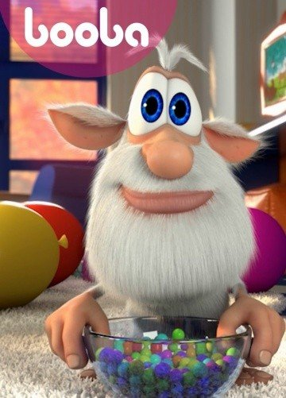
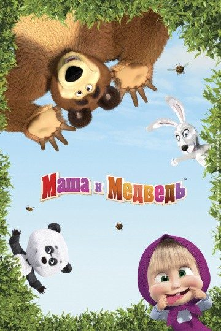
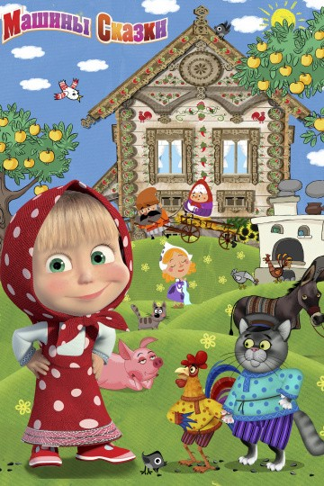
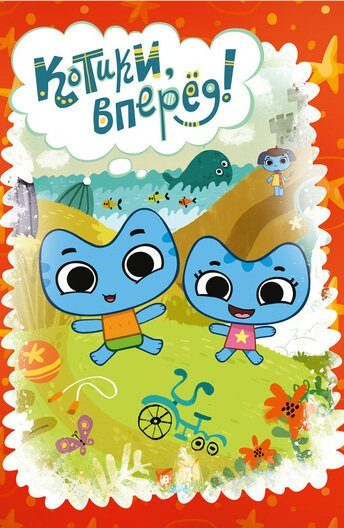
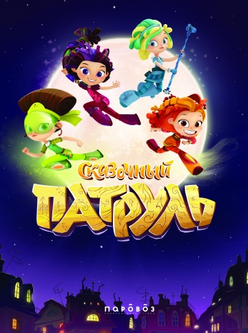
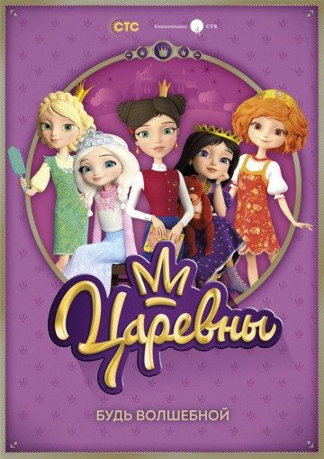
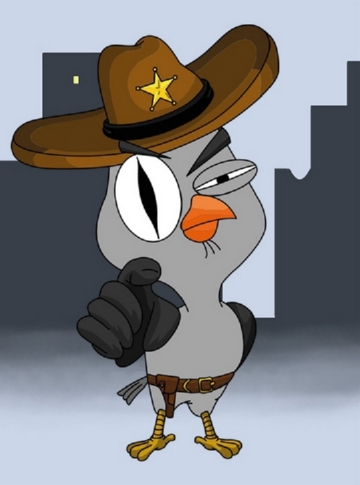
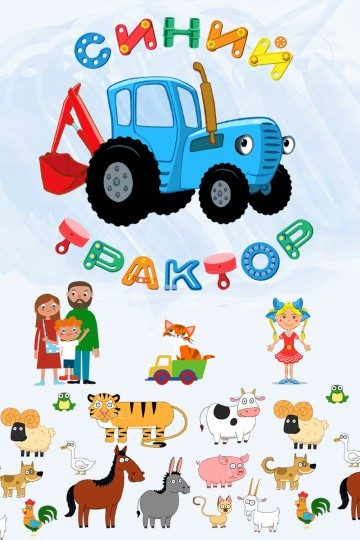
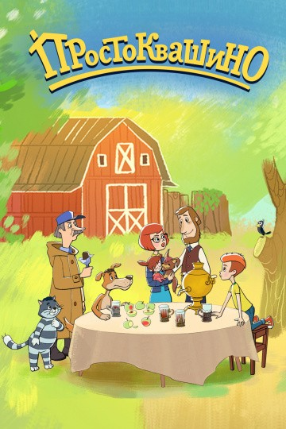

Представляем вашему вниманию подборку русских мультфильмов.
Топ 10 лучших мультфильмов:

Жанр:мультфильм, комедия, семейный, мультсериал
Режиссёр: Сергей Горобец, Алексей Котеночкин, Леонид Рахманин
В ролях: Роман Карев
Буба это необыкновенный домовой, которого не видят хозяева дома в котором он проживает. Как известно людям, что если домовой добрый, то в доме все время будет порядок и присутствовать уют. А вот если это существо чем-то обиженно на свои домочадцев, то их ждет настоящий кошмар и постоянный беспорядок вокруг. В этом мультфильме главную роль играет персонаж в виде старичка, он считает, что ему очень повезло с хозяевами дома, они очень добрые, вот только сам он обладает одним очень большим недостатком.Он очень любопытен и ничего не может поделать с таким своим качеством. В результате это приводит к тому, что каждый раз он попадает в самые невероятные ситуации, но все же он старается приложить максимум усилий для того, чтобы его хозяева смогли избежать неприятностей. Всегда он старается поддерживать в доме порядок и чистоту, но иногда случается так, что дома происходит настоящий бардак по его вине и это заставляет недоумевать жильцов дома. При просмотре этого мультфильма не только дети, но и взрослые смогут познакомиться с таким веселым домовым, он на протяжении веков проживает вместе с людьми, и каждый раз приносит в их жизнь сумасшедший, но при этом довольно забавный хаос. В мультфильме будут показаны короткие истории связанные с проделками Бубы, за которыми наблюдать будет очень интересно и весело.

Жанр: мультфильм, комедия, семейный, мультсериал
Режиссёр:Олег Кузовков, Олег Ужинов, Денис Червяцов
В ролях: Алина Кукушкина, Варвара Саранцева, Борис Кутневич,
Эдуард Назаров, Марк Кутневич, Ирина Кукушкина
Очень забавная и увлекательная история дружбы маленькой девочки по имени Маша и…огромного медведя! Но, увы, не поздоровится тут мишке, который должен будет терпеть капризы маленькой девочки и, как настоящий мужчина, всегда их выполнять. Но, обо всем по порядку. Этот мультсериал начинается с того, что Маша, заблудившись в лесу, знакомится с Медведем, который что – то не очень рад встрече, так как привык жить один и спокойно ведет свое хозяйство, занимается спортом и флиртует с местной медведицей, надеясь получить от нее расположение. Но маленькая девочка Маша полностью переворачивает житье – бытье Медведя, ставя на голову все его устои и традиции. Теперь эта компания вместе встречает новый год, делает заготовки на зиму, гуляет по лесу и ставит на уши остальных соседей «по дому» Медведя. Но, несмотря на то, что Медведь всегда делает вид, что Маша ему мешает и пришла опять не вовремя, он любит ее безумной и трогательной любовью. Большой друг всегда придет на помощь, разделит радость и уберет все «остатки» игр, устроенных девочкой. Эта парочка точно не даст заскучать ни Вам, ни Вашему ребенку, который, порой, в голос будет смеяться над тем, что происходит на экране. И, кстати, после просмотра этого мультсериала, Вам обеспечен ежедневный концерт, ведь песни, которые исполняет Маша в каждой серии, остаются в памяти надолго.

Жанр: мультфильм, детский, комедия, мультсериал
Режиссёр:Ринат Газизов, Денис Червяцов
В ролях: Алина Кукушкина
Несколько лет назад на отечественные экраны вышел прекрасный анимационный сериал, в который буквально влюбились и маленькие зрители, и уже совсем взрослые люди. Главными героями мультсериала стали добродушный, но огромный бурый Медведь и маленькая бесстрашная девочка по имени Маша, которая не побоялась завести дружбу с Мишкой. Теперь наши герои все свое свободное время проводят вместе и развлекают нас своими приключениями. А в данной мультипликационном сериале наши любимые герои познакомят нас с настоящими русскими народными сказками. Маленькая Маша расскажет нам множество любимых и известных произведений, переделав их на свой современный лад. Только теперь сказки приобретут совершенно другой оттенок: они станут более динамичными, яркими, интересными, не лишенными участия наших главных героев. Среди сказок, которые поведает нам маша, мы встретим и «Красную шапочку», и «Снегурочку», и «Царевну – Лягушку» и многие – многие другие. Данный мультсериал отлично подойдет для семейного просмотра, чтобы в интересной игровой форме передать маленьким детям все особенности русского фольклора и научить их многим полезным и нужным качествам которые и подаются в сказках.

Жанр: детский, мультфильм, мультсериал
Режиссёр:Владимир Пономарев
В ролях: Слава Кагарманов, Алиса Ландер, Олег Щербинин, Юлия Яблонская, Джейкоб Клеман,
Люси Джексон, Grace Gonglewski, Buck Schrirner, Chloe Bernardete
Очень добрый и познавательный мультсериал, который предназначен для маленьких детишек и несет в себе познавательную функцию Главными героями здесь являются два милых котенка – мальчик Котя и девочка Катя. С их помощью ребенок будет погружаться в самые разнообразные ситуации и искать из них верный выход. Каждый эпизод строится по одному и тому же шаблону: котята играют в своей комнате, а затем обращают свое внимание на волшебную коробку, где лежат игрушки. Котята выбирают какие – то игрушки, заинтересовавшие их сегодня, после чего и начинается вся история. Наши герои выбираются обратно в свою комнату, которая уже и не комната вовсе, а, например, сказочный замок, потому что сегодня Катя и Котя выбрали игрушки, относящиеся к этому. Теперь и наступает момент, где Ваш ребенок начинает обучаться, ведь наши зверята оказываются перед важным выбором, решают какой – то вопрос или задачу. Но, в силу молодости и неопытности, они, конечно же, ошибаются. И тут им на помощь приходит незнакомец, в котором они не узнают переодетого родителя, и помогает целиком разобраться в ситуации, принять верное решение. После чего котятам предстоит еще раз попасть в эту же самую ситуацию, из которой они уже выйдут с достоинством, потому теперь они знают, как себя нужно вести.

Жанр: мультфильм, детский, мультсериал
Режиссёр: Наиль Мубинов
В ролях:Мирослава Карпович, Полина Кутепова, Ольга Кузьмина, Юлия Александрова,
Иван Жвакин, Ёла Санько, Диомид Виноградов
Что больше всего на свете любят дети? Конечно же мультфильмы! Но вокруг столько «странных» новинок… Хочется , чтобы ребенок учился доброте и отзывчивости. Именно в этом родителям может помочь мультсериал «Сказочный патруль». Не только детям, но и взрослым стоит поучиться смелости и добродушию главных героинь: Аленка, Варя, Маша и Снежка. Да-да! Эти имена запомнятся уже после просмотра первой серии. Юные волшебницы, исходя из своей позитивности, решили создать патруль, чтобы бороться с негативом в городе. У каждой спасительницы свои силы, своя магия, что делает их команду крепче. Конечно же, как и в реальном мире у каждой девчонки свой характер: Варя - ответственная, лидер патруля; Снежка- милая и спокойная; Маша- мозг (куда без него); ну и Аленка- везде есть такая - неуклюжая и непоседливая. Но всех их объединяет любовь к миру и желание помогать. Естественно в этом мире есть не только добрые волшебницы, а еще много интереснейших персонажей. Например, кот-ученый, ну или Мышиный король. Вот бы у всех в городе появился такой патруль…

Жанр: детский, мультфильм, мультсериал
Режиссёр: Елена Галдобина, Константин Бронзит
В ролях:Екатерина Гороховская, Юлия Рудина, Наталья Терешкова, Елизавета Захарьева, Алёна Кононова,
Станислав Концевич, Сергей Мардарь, Мария Цветкова-Овсянникова, Светлана Кузнецова, Сергей Дьячков
Мультфильм под названием "Царевны" описывает веселые и забавные приключения смешных девчонок. Но что-то знакомое проскальзывает в их сказочных образах. Это известные всем с детства царевны сказок, но на новый, современный взгляд. Варвара-краса, царевна-лягушка, Несмеяна, прекрасная Елена и спящая царевна, вот кем оказываются девочки София и Вася, Дашенька, Варюша и Леночка. Новомодные принцессы имеют магические навыками, подаренными им с самого рождения, но они не до конца могут контролировать и управлять ими. Чтобы научиться мастерству, правительство решает отправить их волшебный остров, чтобы научить азам магии. А учить их будет ни кто иной, как Кощей Бессмертный, а также всем известная баба Яга и ученый кот. Здесь, на Дивногорье они смогут стать настоящими волшебницами, но путь к магии не так-то прост, как кажется с первого взгляда. Девочек ожидает много приключений и встреч с забавными призраками, говорящим котом, с деревом познаний. Мультфильм отличается великолепной компьютерной графикой, яркими насыщенными кадрами, волшебной, чарующей музыкой и невероятными, захватывающими приключениями девочек-волшебниц. Он, несомненно, понравится и ребятам и их родителям.

Жанр: мультфильм, комедия, детектив, мультсериал
Режиссёр: Евгений Кузнецов
В ролях: Александр Шахов
В животном мире царит хаос, ведь повсюду нахальные бандиты совершают жестокие преступления и не несут за это никакой ответственности. Чтобы прекратить это безобразие, в отдел полиции приходит герой, готовый до конца биться с преступностью. Эта сова, облачившись в костюм шерифа, решает навести порядок в городе. У него огромные глаза, из-за которых, кажется, что он смотрит на всех с презрением и подозрительностью. Иногда эта сова тоже ведет аморальный образ жизни: пьет, курит, употребляет наркотики, заводит романы с женщинами легкого поведения. Однако это не отменяет того факта, что герой готов сражаться с преступниками до самой смерти. И хотя у него далеко не всегда получается раскрывать преступления и ловить настоящих бандитов, герой не унывает. Ему часто приходится иметь дело со злодеями, которые стараются убить или искалечить подозрительную сову. Однако он постоянно вылезает из перьев, но спасается из безвыходных ситуаций. Ведь в городе он единственный, кто не боится дать отпор преступности. Многие не принимают его всерьез, открыто смеются, но он в любой момент готов отправиться на место преступления, чтобы собрать улики, найти преступника и посадить за решетку.

Жанр: детский, мультсериал
Режиссёр: ---
В ролях: ---
Увлекательный красочный мультсериал раскрывает детям многое познавательное в легкодоступных песенках. Лента принадлежит к серии развивающих мультфильмов, каждый отдельный эпизод которого является поучительным. Просмотрев их, малыши могут научиться собирать воедино многочисленные кусочки пазла, узнать о существующих на свете цветах, автомобилях, животных, растениях и о многом ином. В некоторых сериях на экранах будет появляться мальчик по имени Егор, который будет рассказывать маленьким детям познавательные и интереснейшие истории. С ним вместе они научатся считать до десяти, выучат алфавит, узнают, когда им необходимо ложиться спать, и, в целом, ознакомятся со своим общим жизненным распорядком. Также время от времени будет появляться синий трактор, который посредством увеселительных песенок сможет поднять настроение любому дитя. Он ознакомит малышей с животными и научит распознавать их по издаваемым звукам. После он продемонстрирует им геометрические фигуры, ознакомит с предметами, которые находятся в их окружении. Таким образом, детям удастся провести не только приятное и веселое время, но и набраться от него много нового и неизведанного.
Жанр: мультфильм, приключения, семейный
Режиссёр: Константин Бронзит
В ролях: Сергей Маковецкий, Дмитрий Быковский-Ромашов, Валерий Соловьев, Олег Куликович, Анатолий Петров,
Екатерина Гороховская, Юрий Тарасов, Михаил Черняк, Дмитрий Высоцкий, Александр Боярский
Князь Киевский тяжело болен и приходит время назначать наследника престола. Для Князя эта задача становится не простой. Кандидатов на звание множество: лучший друг семьи, какой-либо родственник или заморская принцесса. Но кого из них выбрать? Поразмыслив, Князь останавливает свой выбор на родственнице - не совсем принцессе, но его близкой племяннице Забаве. Ее муж - ученик Добрыни Никитича. Вместе с мужем, Забава получает образование в Царьграде, который по прежнему находится под властью Василевса. Но деваться некуда. Решение Царя окончательное. Раз уж наследником царства становится Забава, то ее необходимо доставить обратно. Три богатыря: Алеша, Илья Добрыня и верный конь Юлий, на долю которых выпадало множество испытаний, становятся участниками новых приключений. Царь Киевский поручает им отправится за тридевять земель на поиски Забавы, чтобы в спешном порядке вернуть ее на родную землю. Задача кажется простой и ее выполнение не должно занять много времени. Однако, никто не догадывается, что у Василевса также есть планы на занятие престола. Поэтому, трех богатырей ждут не простые приключения, а времени у них не так уж и много.

Жанр: мультфильм, детский, мультсериал
Режиссёр: Михаил Солошенко
В ролях: Антон Табаков, Гарик Сукачев, Иван Охлобыстин, Юлия Меньшова,
Андрей Тенетко, Ольга Голованова, Алексей Онежен
Все началось давным-давно, когда дядя Федор, устав от ужасно скучной и беспокойной жизни в городе большом, оставил родителей да отправился в далекую заброшенную деревню. Решил он насладиться миром и природой. Чувствовал, что именно в деревне было его место. Именно там он познакомился с друзьями новыми: котом ученым Матроскиным и собакой домашней Шариком. На много лет скрепила этих троих дружба. Прошло несколько лет, но медленно текущее в деревне время, того, кажется, почти и не замечала. Не изменилось в деревне практически ничего. Все также философски рассуждал, да утро каждое свежесть молока своего от коровы Мурки проверял кот Матроскин. Все также собака Шарик гулял днями по лесам окрестным, в которых продолжал с камерой охотиться на местных зверей. Вот только ныне он не только снимать умел, но даже фотографии свои во всемирную сеть выкладывать. И каждое лето посещал их, с родителями и без, дядя Федор, в жизни которого все-таки случились сильные изменения. Нет, сам-то он изменился едва ли, а вот в семье его новый член недавно появился. Членом этим стала годовалая девочка по имени Вера Павловна. И летом она приехала навестить деревню вместе с братиком старшим и всей семьей.